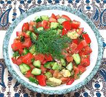

|
Gaza SaladPalestinian Gaza | ||||
| Serves: Effort: Sched: DoAhead: |
5 salad ** 45 min Most |
This salad is made with the popular Gazan mix of dill, garlic, and green chili. The Gazans are very fond of chilis and sweet peppers in all forms, fresh, red, green, dried, pickled, yellow, etc, both as ingredients and as table condiments. | |||
|
|
9 1-1/2 7-1/2 1 3 ------ 1 1/2 3 4 1/4 ------ |
oz # oz T --- cl t T T t --- |
Cucumbers (1) Tomatoes Avocado Chili Serrano (2) Dill -- Dressing Garlic Salt Lemon Juice, Olive Oil ExtV Pepper, black -------- |
Make - (45 min)
|